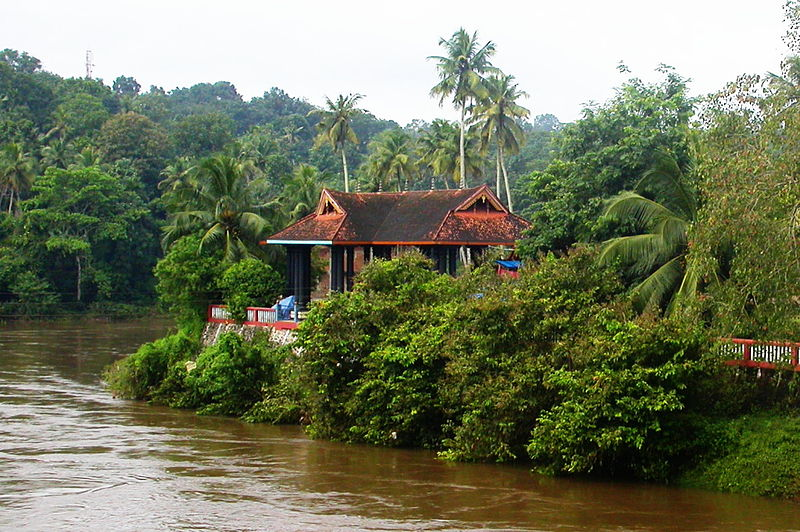
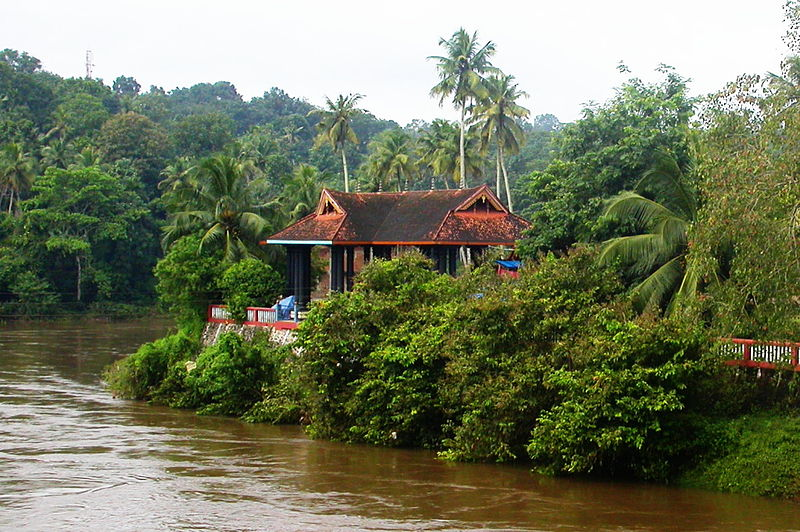

Places to Visit

Konni Forest Reserve
Achankovil River
Pathanamthitta is a municipality situated in the Central Travancore region in the state of Kerala, India, spread over an area of 23.50 km². It is the administrative capital of Pathanamthitta district. The town has a population of 37,538. Pathanamthitta has an important place in erstwhile Travancore state the biggest taluk in the old Travancore state was Pathanamthitta and the revenue collection from this taluk played a prominent role in filling the coffers of the state.The district headquarters is noted for communal and cultural harmony. There are numerous churches, temples and mosques built in close proximity. Situated near the Western Ghats and bordered by the hills, Pathanamthitta district is a treat to eyes with its vast unending stretches of forests, rivers and rural landscapes.
Konni Forest Reserve
Achankovil River